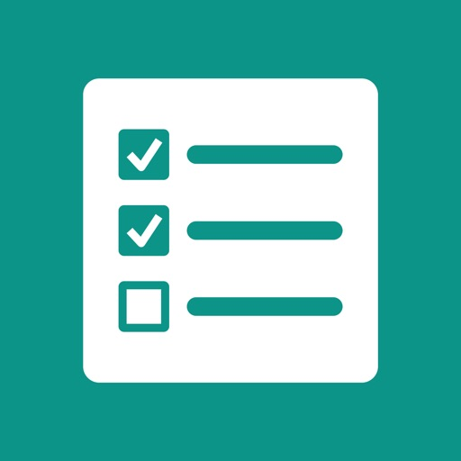
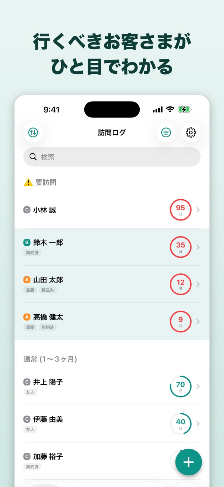
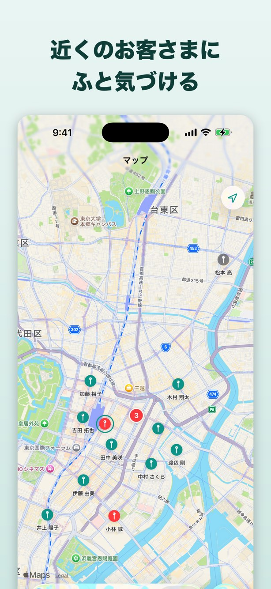
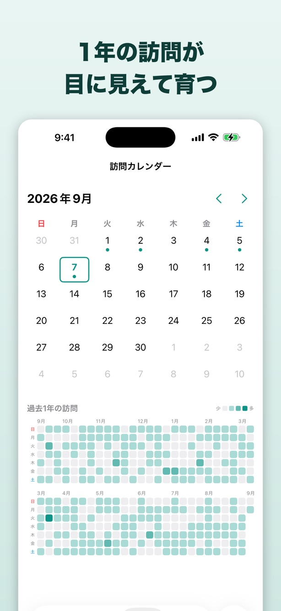

こんな困りごとはありませんか
画面



主な機能
行くべき先がひと目でわかる
最終訪問からの経過日数をリングで表示。目安を過ぎたお客様は赤くなるので、アプリを開いた瞬間に次の訪問先が決まります。
A / B / C ランクで設定
お客様ごとに日数を決める必要はありません。ランクを選ぶだけ。「A は週1、C は3ヶ月に1回」といった目安は設定でまとめて変更できます。
ワンタップで記録
訪問先でメモを添えて記録。振動フィードバックがあるので、画面を見なくても記録できたことがわかります。
記録が積み上がって見える
1年分の訪問がカレンダーのヒートマップになります。日々の積み重ねが目に見える形で残ります。
まとめて検索できる
顧客名・タグ・メモ・訪問記録を横断して検索。「あの話はいつだったか」がすぐ見つかります。
iCloud で自動同期
iPhone で記録して、事務所の Mac で確認。iPhone・iPad・Mac の間で自動的に同期されます。
こんな方に向いています
- ルート営業で多くのお客様を担当している方
- 定期的なメンテナンスや点検業務を行っている方
- 「うっかり訪問し忘れ」を防ぎたい方
- 複雑な CRM や SFA が続かなかった方
- 紙の手帳や Excel での管理に限界を感じている方
料金
Pro は買い切りです。月額料金や追加課金はありません。
無料
¥0
- 顧客登録・訪問記録
- 経過日数リング表示
- A / B / C ランク設定
- iCloud 同期
- 広告が表示されます
Pro（買い切り）
アプリ内で確認一度の購入でずっと
- 過去すべての訪問記録を横断検索
- ヒートマップ1年分表示
- 広告の非表示
- CSV エクスポート / Obsidian 書き出し
- Mac 版の顧客登録数が無制限
よくある質問
データはどこに保存されますか？
お使いの端末内に保存され、iCloud を通じて同期されます。開発者が用意したサーバーは存在せず、訪問記録や顧客情報を開発者が閲覧することはできません。
オフラインでも使えますか？
使えます。記録と閲覧はすべて端末内で完結します。通信は iCloud 同期と広告の表示にのみ使用します。
Pro を買うと他の端末でも使えますか？
同じ Apple アカウントであれば、追加の支払いなく他の端末でも Pro をご利用いただけます。
データを外に持ち出せますか？
Pro 版で CSV エクスポートに対応しています。Obsidian への自動書き出しにも対応しています。
顧客は何件まで登録できますか？
iPhone / iPad 版に登録数の制限はありません。Mac 版は無料の場合に上限があり、Pro で無制限になります。
サポート
不具合の報告、ご要望、使い方のご質問は、お問い合わせフォームからお寄せください。個人で開発・運営しているため、すべてに返信できるとは限りませんが、いただいた内容はすべて目を通しています。
データの取り扱いについてはプライバシーポリシーをご覧ください。